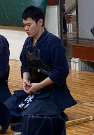

關於我
姓名：陳昶亨
學號：111612019 土木 a
自我介紹
大家好，我是土木3A陳昶亨想選這堂課是因為畢業專題需要用到資訊整合的部分，但是對於網頁開發不太有接觸所以想透過課程學習到能應用在專題上面並希望能在未來有所應用
課業之外，有參加劍道社，社團活動算是我
在課餘時間，我喜歡研究最新的科技發展和程式語言，尤其對於人工智能和web開發領域特別感興趣。我希望未來能夠運用所學，開發對社會有價值的應用程式。
興趣愛好
程式設計
我熱愛編寫程式，尤其是網頁開發和移動應用開發。我經常參加hackathon和其他編程競賽，這些經歷幫助我提升了解決問題的能力。
戶外活動
在緊張的學習之餘，我喜歡參加各種戶外活動，如爬山和健行。這些活動不僅能幫助我保持健康，還能讓我放鬆心情，重新整理思緒。
閱讀
我是一個閱讀愛好者，特別喜歡科技和科幻類的書籍。這些書不僅拓展了我的視野，還激發了我對於未來科技發展的思考。